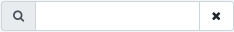

2 Dashboard's Web user interface #
2.1 Logging in #
To log in to the Ceph Dashboard, point your browser to its URL including the port number. Run the following command to find the address:
cephuser@adm > ceph mgr services | grep dashboard
"dashboard": "https://host:port/",The command returns the URL where the Ceph Dashboard is located. If you are having issues with this command, see Book “Troubleshooting Guide”, Chapter 10 “Troubleshooting the Ceph Dashboard”, Section 10.1 “Locating the Ceph Dashboard”.

Log in by using the credentials that you created during cluster deployment
(see Book “Deployment Guide”, Chapter 7 “Deploying the bootstrap cluster using ceph-salt”, Section 7.2.9 “Configuring the Ceph Dashboard login credentials”).
If you do not want to use the default admin account to access the Ceph Dashboard, create a custom user account with administrator privileges. Refer to Chapter 11, Manage users and roles on the command line for more details.
As soon as an upgrade to a new Ceph major release (code name: Pacific) is available, the Ceph Dashboard will display a relevant message in the top notification area. To perform the upgrade, follow instructions in Book “Deployment Guide”, Chapter 11 “Upgrade from SUSE Enterprise Storage 7 to 7.1”.

The dashboard user interface is graphically divided into several blocks: the utility menu in the top right-hand side of the screen, the main menu on the left-hand side, and the main content pane.

2.2 Utility menu #
The top right-hand side of the screen contains a utility menu. It includes general tasks related more to the dashboard than to the Ceph cluster. By clicking the options, you can access the following topics:
Change the dashboard's language interface to: Czech, German, English, Spanish, French, Indonesian, Italian, Japanese, Korean, Polish, Portuguese (Brazilian), and Chinese.
Tasks and notifications
View the documentation, information about the REST API, or further information about the dashboard.
User management and telemetry configuration.
 Note
NoteFor more detailed command line descriptions for user roles, see Chapter 11, Manage users and roles on the command line.
Log in configuration; change the password or sign out.
2.3 Main menu #
The dashboard's main menu occupies the left-hand side of the screen. It covers the following topics:
Return to Ceph Dashboard's home page.
View detailed information about hosts, inventory, Ceph Monitors, services, Ceph OSDs, cluster configuration, CRUSH Map, Ceph Manager modules, logs, and monitoring.
View and manage cluster pools.
View detailed information and manage RADOS Block Device images, mirroring, and iSCSI.
View and manage NFS Ganesha deployments.
NoteIf NFS Ganesha is not deployed, an information notice appears. See Section 11.6, “Configuring NFS Ganesha in the Ceph Dashboard”.
View and manage CephFSs.
View and manage Object Gateway's daemons, users, and buckets.
NoteIf Object Gateway is not deployed, an informative notice appears. See Section 10.4, “Enabling the Object Gateway management front-end”.
2.4 Content pane #
The content pane occupies the main part of the dashboard's screen. The dashboard home page shows plenty of helpful widgets to inform you briefly about the current status of the cluster, capacity, and performance information.
2.5 Common Web UI features #
In Ceph Dashboard, you often work with lists—for example, lists of pools, OSD nodes, or RBD devices. All lists will automatically refresh themselves by default every five seconds. The following common widgets help you manage or adjust these list:
Click to trigger a manual refresh of the list.
{kind=link}
Click  to display or hide individual table columns.
to display or hide individual table columns.
Click  and enter (or select) how many rows to display on a
single page.
and enter (or select) how many rows to display on a
single page.
Click inside  and filter the rows by typing the string to search for.
{kind=link}
Use  to change the currently displayed page if the list
spans across multiple pages.
to change the currently displayed page if the list
spans across multiple pages.
2.6 Dashboard widgets #
Each dashboard widget shows specific status information related to a specific aspect of a running Ceph cluster. Some widgets are active links and after clicking them, they will redirect you to a related detailed page of the topic they represent.
Some graphical widgets show you more detail when you move the mouse over them.
2.6.1 Status widgets #
widgets give you a brief overview about the cluster's current status.
{kind=link}
Presents basic information about the cluster's health.
Shows the total number of cluster nodes.
Shows the number of running monitors and their quorum.
Shows the total number of OSDs, as well as the number of up and in OSDs.
Shows the number of active and standby Ceph Manager daemons.
Shows the number of running Object Gateways.
Shows the number of Metadata Servers.
Shows the number of configured iSCSI gateways.
2.6.2 Capacity widgets #
widgets show brief information about the storage capacity.
{kind=link}
Shows the ratio of used and available raw storage capacity.
Shows the number of data objects stored in the cluster.
Displays a chart of the placement groups according to their status.
Shows the number of pools in the cluster.
Shows the average number of placement groups per OSD.
2.6.3 Performance widgets #
widgets refer to basic performance data of Ceph clients.

The amount of clients' read and write operations per second.
The amount of data transferred to and from Ceph clients in bytes per second.
The throughput of data recovered per second.
Shows the scrubbing (see Section 17.4.9, “Scrubbing a placement group”) status. It is either
inactive,enabled, oractive.